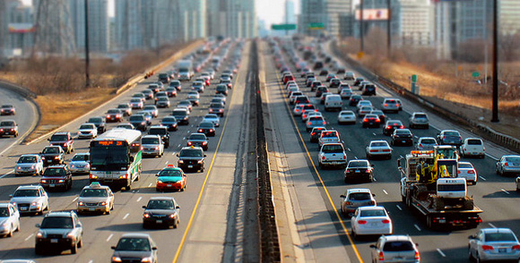
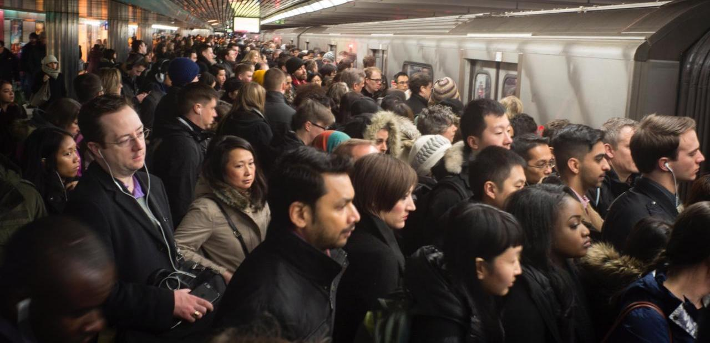
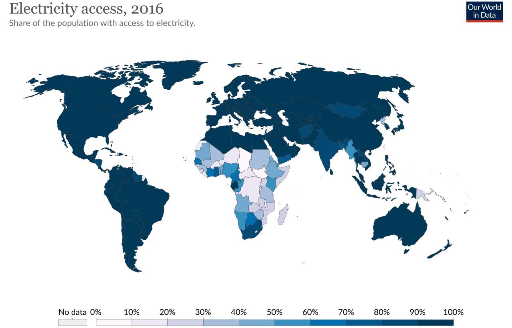

| The global population has recently surpassed 7 and a half billion. Infrastructure is the key to providing the world acess to the ressources it needs; it provides sustainable economic growth, improves supply chains, provides services, and improves quality of life. Despite the necessity of infrastructure, it's still largely unsafe, not environmental, or even unavilable across the globe. |  |
| A large contributer to lacking infrastructure is disproportionate funding. Countries and municipalities often underfund infrastructure, or there is a lack of private investment, this leads to large abscences of infrastructure and the problems that come with it. Among the world's largest infrastructure spenders, many have funding gaps measuring in percents of their GDPs (figure on the left). | |
| Already existing infrastructure has its own issues, it can be underperforming, and hazardous. As settlements expand, goverments build infrastructure to support them, but often neglected is aging infrastructure. Older infrastructure often has a lower capacity and is overused, it's also likely less efficient, but frequently aging infrastructure is only refurbished to meet requirements. Obsolete infrastructure also has the potential to be unsafe and cease working |  |
|  | Worse than the issue of aging infrastructure, is abscent infrastructre. Common in developing nations, forms of infrastructure are not present, leading to sizeable economic, social, or health issues. For instance, least developed countries only have an average internet acess of 19% and often don't have any electricity (see the figure on the left). |